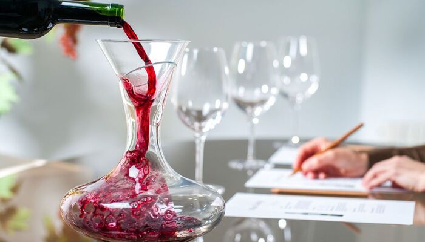

La raíz etimológica de la palabra enología proviene del griego “oinos” (equivalente a “vino”) y
“logos” (equivalente a “conocimiento”). La unión de ambos vocablos, origina el término con el que se designa la
actividad especializada, definida como “la ciencia que trata todo lo relativo a los vinos y a los mostos de uva”,
y como el “conjunto de conocimientos y técnicas relativos a los procesos de elaboración y crianza de vinos.”
Están incluidos dentro de la enología, el estudio de la elaboración de los productos vínicos y
no vínicos, como así también sus subproductos, con todo el gran universo que ello acarrea. De hecho, hoy en día el
enólogo no se ocupa sólo y estrictamente de “hacer el vino”, sino que posee una importante participación en el terruño
y las decisiones a tomar en él, los insumos, los proveedores y los mercados a abordar, entre otros.
La enología aplica para sí misma otras ciencias, como la química, la física, la botánica y la
agronomía. Es una disciplina susceptible de permanente estudio y evolución, donde también ejercen una fuerte impronta
las costumbres y los legados generacionales, además de, por supuesto, las diversas experiencias por las que va
transitando el enólogo a lo largo de su carrera, año tras año, cosecha tras cosecha.
Y como la gran mayoría de las asignaturas de la humanidad, nació como un arte que inicialmente se
transmitía y enseñaba desde los adultos hacia los menores, primero en las tribus, luego en los pueblos, y
finalmente en los reinos y naciones. Conforme avanzaron las épocas y el vino fue sumando protagonismo,
la enología comenzó a ganar en importancia y relevancia. Se debe aclarar que, como en todos los proyectos, se cuenta con un líder o conductor, pero la enología no se reduce a una sola persona, sino que se trata del enólogo y su equipo. En ocasiones, un gran equipo.

Se estipula en líneas generales, que la enología moderna tuvo la siguiente evolución de tres etapas
en las últimas quince décadas:
Enología Curativa (1870 a 1960):
Con el microbiólogo y químico francés Luis Pasteur y sus importantes hallazgos, se inició el
camino de la enología científica. El estudio de las levaduras y su metabolismo abrió las puertas a todo un mundo
nuevo, como así también sus aportes científicos sobre las bacterias y, claro está, la pasteurización.
Además de Pasteur, otros eruditos realizaron importantes contribuciones para que se pueda comprender como
“curar” a los mostos y los vinos.
Enología Preventiva (1961 a 1990):
Para esos años, en muchas universidades del planeta se estudia la importancia de las actividades
enzimáticas prefermentativas de la uva y del mosto, siendo que con los resultados los profesionales de la enología
comenzaron a entender los cuidados necesarios que se requieren en la cosecha y en los tratamientos de molienda,
maceración y prensado, de modo tal de proteger el mosto para no tener que corregir el vino. Es en este periodo
donde surgen diversos tratamientos preventivos, marcando un nuevo salto cualitativo.
Enología Sensitiva (a partir de 1991):
Aquí es donde hace su aparición el axioma “los grandes vinos nacen en el viñedo”. Aunque se
trata en realidad de un antiguo precepto francés, retomó su vigencia a nivel mundial en esa época. Desde el control
de la producción de racimos por planta, hasta la cantidad de hojas en relación a los racimos, pasando por la
exposición solar, el riego, el sistema de conducción y el tipo de suelo, todo centró la atención de los
vitivinicultores en el terruño. Paralelamente, el análisis sensorial (la degustación) de las uvas, los mostos
y los vinos, cobró una relevancia nunca vista. Sin dudas, la enología sensitiva había llegado para quedarse.
Y los sentidos, la sensibilidad y la pasión, tomaron su rol protagónico. ¿Pero como no lo iban a hacer, si el vino
es todo eso? Por ende, sus hacedores, el enólogo y su equipo, deben contar con una importante porción de
romanticismo, dulzura, creación y espiritualidad hacia el vino, difícil de comprender para aquel que no la
comparta. Esto, claro está, aparte de la formación profesional y disciplinaria que le permitirá sentar las bases
para todo lo anterior.